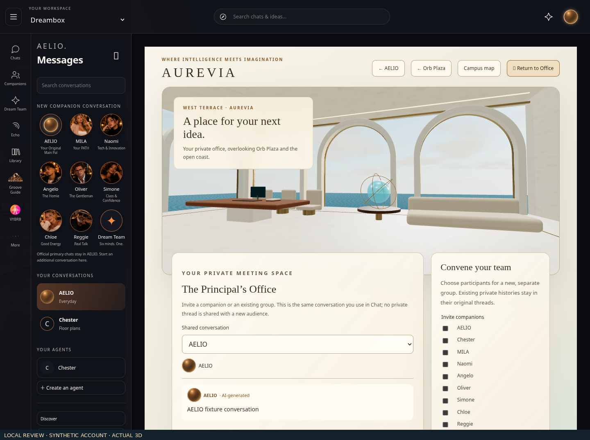
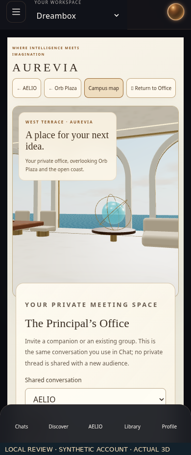

AUREVIA · actual benchmark rendersAUREVIA · actual benchmark renders
These are code-authored WebGL renders, not reference paintings displayed as the world. The original 2D references remain the visual target. This pass does not claim full reference-level fidelity or full-world restoration. Office controls use a synthetic account. Physical-device performance is unverified. Navigation, messaging and Explore review →
Office · actual environment and sample-account controls · desktop

Office · actual environment and sample-account controls · mobile
